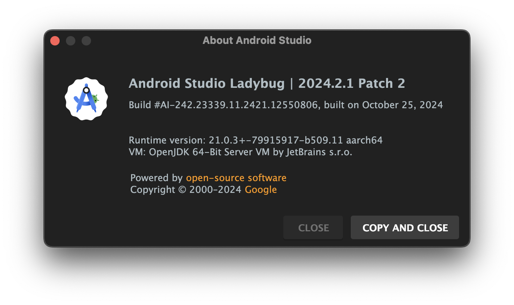
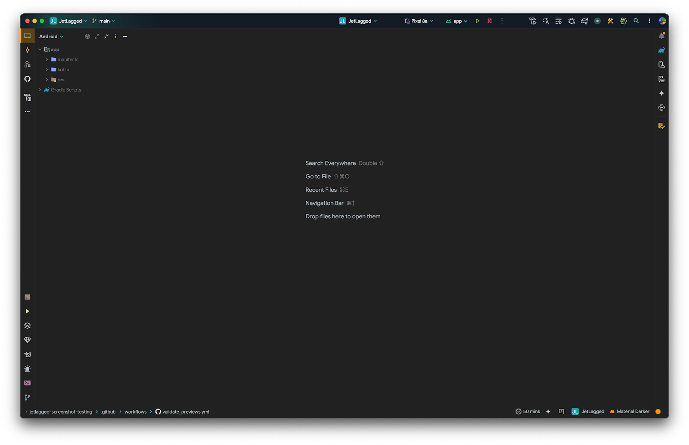

Last Updated: Nov 8, 2024
In modern Android development, ensuring the visual correctness of user interfaces is critical. Screenshot testing allows developers to automatically capture, compare, and verify the appearance of their app's UI. With the introduction of Compose Preview Screenshot Testing in Jetpack Compose, testing UI elements has become even more efficient and accessible. This tool allows you to take advantage of Compose's preview functionality to create pixel-perfect screenshots directly in your development environment.
In this codelab, you'll learn how to set up Compose Preview Screenshot Testing, create and capture screenshots of composables, and incorporate screenshot tests into your development workflow. By the end of this guide, you'll be equipped with the skills to ensure your app's UI remains visually consistent, reducing regressions and enhancing user experience without relying solely on manual testing.
By the end of this codelab, participants will have practical experience writing and running screenshot tests for a real-world Jetpack Compose app, using a JetLagged project to ensure their app's UI remains consistent across updates and configurations.

Before starting this Codelab, here are some articles to get you up to speed with Jetpack Compose Previews. This knowledge is useful for creating and manipulating previews for screenshot testing using Compose Preview Screenshot Testing
You will be using Android Studio for this CodeLab. You can download the latest stable version for your computer. Once downloaded, please go through the setup wizard to ensure that the Java, SDK and Tools are correctly set up.
I've put everything you need for this project into a Git repo. To get started, you'll need to grab the code and open it in Android Studio.
Using Android Studio or your favorite git client to use git.
If you want to download the code instead, download the zip file below
Open the project in Android Studio and let it sync. Once synced, your window should look like this.

Take some time to explore the project. In particular, have a look at various composables and previews.
Run the app on an emulator or a physical device and understand various UI elements.
Feel free to create new previews or setup data for any screenshot tests that you might want to create later.
The app contains 7 days with of sleep data at app/src/main/kotlin/me/kartikarora/jetlagged/data/FakeSleepData.kt
If you run into issues with Previews not rendering in Android Studio, in particular with an NoSuchElementException, there's an issue with Compose Preview tooling.
This can be fixed by generating a lot of fake data for this repository. By default, 7 days worth of data is provided, however you can generate 90 days worth of data.
In the terminal, run kotlinc -script scripts/generateRandomSleepData.main.kts.
This script updates the FakeSleepData.kt class with randomly generated 90 days worth of data.
In this project, we are using version catalog to manage our dependencies. If you have never used this before, have a read of my article State of Dependency Management in Android Studio. This should get you up to speed with version catalogs in Android Studio.
In the project, you will find the catalog defined in libs.versions.toml file in the gradle directory
[versions]
...
screenshot = "0.0.1-alpha07"
[plugins]
...
screenshot = { id = "com.android.compose.screenshot", version.ref = "screenshot"}... represents the existing entries which we are not modifying
Now hit the sync button for Android Studio to fetch the new dependency
Next, we need to tell our app module about this new plugin. Open the build.gradle.kts file for the app module and add the following
plugins {
...
alias(libs.plugins.screenshot)
}
android {
...
experimentalProperties["android.experimental.enableScreenshotTest"] = true
}
dependencies {
...
screenshotTestImplementation(libs.androidx.compose.ui.tooling)
}
As a final step, we want to tell gradle that we are explicitly enabling this experimental feature. This is done via the gradle.properties file.
...
# Enable screenshot tests
android.experimental.enableScreenshotTest=trueSync the project one more time. If there are no complaints from Android Studio, we are good to proceed to the next step.
We will be setting up our previews for screenshot testing, and then create some reference images. These reference images will be the "truth". Every validation of UI will use these reference images as baseline.
To designate the composable previews you want to use for screenshot tests, place the previews in a test class. The test class file must be located in the screenshotTest source set i.e. app/src/screenshotTest/kotlin/me/kartikarora/jetlagged/PreviewsForTest.kt
You can add more composables and/or previews, including multi-previews, in this file or other files created in the same sourceset.
class PreviewsForTest {
@Composable
@CombinedPreview
fun JetLaggedHomeScreenPreview(@PreviewParameter(JetLaggedHomeScreenPreviewProvider::class) uiState: JetLaggedScreenState) {
JetLaggedHomeScreen(
sleepGraphData = uiState.sleepGraphData,
wellnessData = uiState.wellnessData,
heartRateData = uiState.heartRateData
)
}
@Composable
@CombinedPreview
fun JetLaggedHSleepScreenPreview(@PreviewParameter(JetLaggedHomeScreenPreviewProvider::class) uiState: JetLaggedScreenState) {
JetLaggedSleepScreen(sleepGraphData = uiState.sleepGraphData)
}
@Composable
@CombinedPreview
fun JetLaggedHeaderPreview(@PreviewParameter(HeaderPreviewDataProvider::class) header: String) {
JetLaggedHeader(headerText = header)
}
@Composable
@CombinedPreview
fun JetLaggedHeaderTabsPreview() {
JetLaggedHeaderTabs(onTabSelected = {}, selectedTab = SleepTab.Month)
}
// Heart Rate
@Composable
@CombinedPreview
fun HeartRateCardPreview() {
HeartRateCard()
}
@Composable
@CombinedPreview
fun HeartRateGraphPreview() {
HeartRateGraph(heartRateGraphData)
}
// Sleep
@CombinedPreview
@Composable
fun SleepBarPreview() {
SleepBar(sleepData = sleepData.sleepDayData.first())
}
@CombinedPreview
@Composable
fun SleepGraphCardPreview(
) {
SleepGraphCard(sleepState = sleepData)
}
@CombinedPreview
@Composable
fun SleepGraphCardWithHeaderPreview(
) {
SleepGraphCard(sleepState = sleepData, cardHeading = "JetLagged")
}
// UI
@CombinedPreview
@Composable
fun FadingCirclePreview() {
FadingCircleBackground(bubbleSize = 48.dp, color = Color.Magenta)
}
}
class HeaderPreviewDataProvider : PreviewParameterProvider<String> {
override val values: Sequence<String> = sequenceOf("JetLagged", "Sleep", "Home")
}Feel free to add more previews and play around with previews until you are happy with the results.
Now that the previews are ready, let's set up our reference images. To do so, open terminal in Android Studio and run the following gradle task
Linux & MacOS : ./gradlew :app:updateDebugScreenshotTest
Windows: gradlew :app:updateDebugScreenshotTest
Once the task completes, you will be able to find the reference images at app/src/debug/screenshotTest/reference/app/src/debug/screenshotTest/reference
With the reference images now in place, you should be able to run the tests using the gradle tasks
Linux and macOS: ./gradlew :app:validateDebugScreenshotTest
Windows: gradlew :app:validateDebugScreenshotTest
The validation task creates an HTML report at app/build/reports/screenshotTest/preview/debug/index.html
Play around with the previews or the UIs and run the validation task again. This time the tests will fail and the test report will show an image diff highlighting the differences
It is only natural that the UI will change and you would need to update the reference images when this happens. Otherwise your UI test will be correct, but because references are outdated, the tests will fail every time.
To update your references, all you have to do is run the update task again
Linux & MacOS : ./gradlew :app:updateDebugScreenshotTest
Windows: gradlew :app:updateDebugScreenshotTest
This will create new reference images at app/src/debug/screenshotTest/reference/app/src/debug/screenshotTest/reference
In this CodeLab, we'll focus on running the validation step on every push. We'll be using Github Actions as our CI server.
We'll be writing some YAML for this and declare a workflow where a few things happen on every push.
name: Validate Previews
on:
push:
jobs:
validate:
runs-on: ubuntu-latest
permissions:
checks: write
pull-requests: write
steps:
- name: Checkout
uses: actions/checkout@v4
- uses: gradle/actions/wrapper-validation@v4
- name: Setup JDK
uses: actions/setup-java@v4
with:
distribution: 'zulu'
java-version: 21.0.4
- name: Make Gradle executable
run: chmod +x ./gradlew
- name: Validate UI using screenshot tests
run: ./gradlew app:validateScreenshotTest
- name: Upload test result
uses: actions/upload-artifact@v4
if: always()
with:
name: 'screenshot-test-result'
path: 'app/build/reports/screenshotTest/preview/debug'
- name: Publish Test Results
uses: EnricoMi/publish-unit-test-result-action@v2
if: always()
with:
files: |
app/build/test-results/**/*.xmlWhat this workflow does is
You can extend this to run for every pull request as well, however I'll leave that as a take home task.